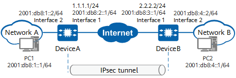

Example for Establishing an IPsec 6over4 Tunnel Between Two Gateways Using Physical Interfaces (IPv6 over IPv4 Encrypted Tunnel)
Networking Requirements
As shown in Figure 1, two IPv6 networks are connected to an IPv4 public network through DeviceA and DeviceB respectively. Security protection is desired for mutual access traffic between the IPv6 networks.
The IPv6 networks communicate with each other over the IPv4 public network. An IPsec 6over4 tunnel needs to be established between DeviceA and DeviceB so that users on the IPv6 networks can communicate with each other over the IPsec tunnel.

In this example, interface 1 and interface 2 represent 10GE 0/0/1 and 10GE 0/0/2 on DeviceA, and interface 3 and interface 4 represent 10GE 0/0/1 and 10GE 0/0/2 on DeviceB.

Item |
Data |
|---|---|
DeviceA |
Interface: 10GE 0/0/1 IPv4 address: 1.1.1.1/24 IPv6 address: 2001:db8:2::1/64 |
Interface: 10GE 0/0/2 IPv6 address: 2001:db8:1::2/64 |
|
IPsec configuration Remote address: 2.2.2.2 Authentication type: pre-shared key Pre-shared key: YsHsjx_202206 Local ID type: IP address Remote ID type: Any |
|
DeviceB |
Interface: 10GE 0/0/1 IPv4 address: 2.2.2.2/24 IPv6 address: 2001:db8:3::1/64 |
Interface: 10GE 0/0/2 IPv6 address: 2001:db8:4::2/64 |
|
IPsec configuration Remote address: 1.1.1.1 Authentication type: pre-shared key Pre-shared key: YsHsjx_202206 Local ID type: IP address Remote ID type: Any |
Configuration Roadmap
This example uses default security algorithms of IPsec.
For security purposes, you are advised not to use the weak security algorithm or weak security protocol of this feature. If you must use such a weak security algorithm or protocol, run the install feature-software WEAKEA command to install the weak security algorithm or protocol feature package WEAKEA.
The configuration roadmap is as follows:
- Perform basic interface configurations.
- Configure routes to the peer intranet.
- Configure IPsec policies, including basic information of IPsec policies, data flows to be encrypted, and IPsec proposal negotiation parameters.
Procedure
- Configure public and private network interfaces on DeviceA.
# Configure the public network interface 10GE 0/0/1.
<HUAWEI> system-view [HUAWEI] sysname DeviceA [DeviceA] interface 10ge 0/0/1 [DeviceA-10GE0/0/1] undo portswitch [DeviceA-10GE0/0/1] ip address 1.1.1.1 24 [DeviceA-10GE0/0/1] ipv6 enable [DeviceA-10GE0/0/1] ipv6 address 2001:db8:2::1/64 [DeviceA-10GE0/0/1] quit
# Configure the private network interface 10GE 0/0/2.
[DeviceA] interface 10ge 0/0/2 [DeviceA-10GE0/0/2] undo portswitch [DeviceA-10GE0/0/2] ipv6 enable [DeviceA-10GE0/0/2] ipv6 address 2001:db8:1::2/64 [DeviceA-10GE0/0/2] quit
- Configure static routes on DeviceA to divert tunnel negotiation packets and encrypted data packets transmitted through the IPsec tunnel.
Assume that the next-hop IP addresses of the routes from DeviceA to the Internet are 1.1.1.254 and 2001:db8:2::2.
# Configure a static route to DeviceB to divert tunnel negotiation packets.
[DeviceA] ip route-static 2.2.2.0 255.255.255.0 1.1.1.254
# Configure a static route to network B to divert encrypted data packets transmitted through the tunnel.
[DeviceA] ipv6 route-static 2001:db8:4::0 64 2001:db8:2::2
- Configure an ISAKMP IPsec policy on DeviceA and apply an IPsec policy to 10GE 0/0/1.
- Configure an IPsec policy.
[DeviceA] ipsec policy map1 10 isakmp [DeviceA-ipsec-policy-isakmp-map1-10] security acl ipv6 3000 [DeviceA-ipsec-policy-isakmp-map1-10] proposal tran1 [DeviceA-ipsec-policy-isakmp-map1-10] ike-peer b [DeviceA-ipsec-policy-isakmp-map1-10] sa trigger-mode auto [DeviceA-ipsec-policy-isakmp-map1-10] quit
By default, the negotiation for IPsec tunnel establishment is triggered by traffic. To enable automatic negotiation for IPsec tunnel establishment, run the sa trigger-mode auto command.
- Configure an IPsec policy.
- Configure public and private network interfaces on DeviceB.
# Configure the public network interface 10GE 0/0/1.
<HUAWEI> system-view [HUAWEI] sysname DeviceB [DeviceB] interface 10ge 0/0/1 [DeviceB-10GE0/0/1] undo portswitch [DeviceB-10GE0/0/1] ip address 2.2.2.2 24 [DeviceB-10GE0/0/1] ipv6 enable [DeviceB-10GE0/0/1] ipv6 address 2001:db8:3::1/64 [DeviceB-10GE0/0/1] quit
# Configure the private network interface 10GE 0/0/2.
[DeviceB] interface 10ge 0/0/2 [DeviceB-10GE0/0/2] undo portswitch [DeviceA-10GE0/0/2] ipv6 enable [DeviceB-10GE0/0/2] ipv6 address 2001:db8:4::2/64 [DeviceB-10GE0/0/2] quit
- Configure static routes on DeviceB to divert tunnel negotiation packets and encrypted data packets transmitted through the IPsec tunnel.
Assume that the next-hop IP addresses of the routes from DeviceB to the Internet are 2.2.2.254 and 2001:db8:3::2.
# Configure a static route to DeviceA to divert tunnel negotiation packets.
[DeviceB] ip route-static 1.1.1.0 255.255.255.0 2.2.2.254
# Configure a static route to network A to divert encrypted data packets transmitted through the tunnel.
[DeviceB] ipv6 route-static 2001:db8:1::0 64 2001:db8:3::2
- Configure an ISAKMP IPsec policy on DeviceB and apply an IPsec policy to 10GE 0/0/1.
- Configure an IPsec policy.
[DeviceB] ipsec policy map1 10 isakmp [DeviceB-ipsec-policy-isakmp-map1-10] security acl ipv6 3000 [DeviceB-ipsec-policy-isakmp-map1-10] proposal tran1 [DeviceB-ipsec-policy-isakmp-map1-10] ike-peer a [DeviceB-ipsec-policy-isakmp-map1-10] sa trigger-mode auto [DeviceB-ipsec-policy-isakmp-map1-10] quit
By default, the negotiation for IPsec tunnel establishment is triggered by traffic. To enable automatic negotiation for IPsec tunnel establishment, run the sa trigger-mode auto command.
- Configure an IPsec policy.
Verifying the Configuration
After the configuration is complete, run the ping command on a device in the protected network segment of network A or network B to trigger IKE negotiation.
If IKE negotiation succeeds, devices in the protected network segments at both ends of the tunnel can ping each other successfully. Otherwise, IKE negotiation fails.
On DeviceA and DeviceB, run the display ike sa and display ipsec sa brief commands to check SA establishment information. The following example uses the command output on DeviceB, which indicates that IKE SAs and IPsec SAs have been established.
<DeviceB> display ike sa Total number of IKE SA in all CPU : 2 Total number of phase 1 SA in all CPU : 1 Total number of phase 2 SA in all CPU : 1 Flag Description: RD--READY ST--STAYALIVE RL--REPLACED FD--FADING TO--TIMEOUT HRT--HEARTBEAT LKG--LAST KNOWN GOOD SEQ NO. BCK--BACKED UP M--ACTIVE S--STANDBY A--ALONE NEG--NEGOTIATING Slot 0, cpu 0 IKE SA information : Number of IKE SA : 2, number of IKE SA1: 1, number of IKE SA2: 1 ----------------------------------------------------------------------------- Conn-ID Peer VPN Flag(s) Phase RemoteType RemoteID ----------------------------------------------------------------------------- 16777239 1.1.1.1/500 RD|ST|A v2:2 IP 1.1.1.1 16777232 1.1.1.1/500 RD|ST|A v2:1 IP 1.1.1.1 -------------------------------------------------------------------------------<DeviceB> display ipsec sa brief Slot 0, cpu 0 IPSec SA information: Src address Dst address SPI VPN Protocol Algorithm ------------------------------------------------------------------------------- 2.2.2.2 1.1.1.1 16423687 ESP E:AES-256-GCM-128 1.1.1.1 2.2.2.2 274624861 ESP E:AES-256-GCM-128 Number of IPSec SA : 2 ------------------------------------------------------------------------------- Total number of IPSec SA in all CPU : 2
Configuration Scripts
- DeviceA
# sysname DeviceA # acl ipv6 number 3000 rule 5 permit ipv6 source 2001:db8:1::0/64 destination 2001:db8:4::0/64 # ipsec proposal tran1 esp authentication-algorithm sha2-256 esp encryption-algorithm aes-256-gcm-128 # ike proposal 10 encryption-algorithm aes-gcm-256 dh group14 authentication-method pre-share integrity-algorithm hmac-sha2-256 prf hmac-sha2-256 # ike peer b pre-shared-key %@%@'OMi3SPl%@TJdx5uDE(44*I^%@%@ ike-proposal 10 remote-address 2.2.2.2 # ipsec policy map1 10 isakmp security acl ipv6 3000 ike-peer b proposal tran1 sa trigger-mode auto # interface 10GE0/0/2 ipv6 enable ipv6 address 2001:db8:1::2 64 # interface 10GE0/0/1 ip address 1.1.1.1 255.255.255.0 ipv6 enable ipv6 address 2001:db8:2::1 64 ipsec policy map1 # ip route-static 2.2.2.0 255.255.255.0 1.1.1.254 ipv6 route-static 2001:db8:4::0 64 2001:db8:2::2 # return
- DeviceB
# sysname DeviceB # acl ipv6 number 3000 rule 5 permit ipv6 source 2001:db8:4::0/64 destination 2001:db8:1::0/64 # ipsec proposal tran1 esp authentication-algorithm sha2-256 esp encryption-algorithm aes-256-gcm-128 # ike proposal 10 encryption-algorithm aes-gcm-256 dh group14 authentication-method pre-share integrity-algorithm hmac-sha2-256 prf hmac-sha2-256 # ike peer a pre-shared-key %@%@W[QD:1tV\'f"!1W&yrX6v$B>%@%@ ike-proposal 10 remote-address 1.1.1.1 # ipsec policy map1 10 isakmp security acl ipv6 3000 ike-peer a proposal tran1 sa trigger-mode auto # interface 10GE0/0/2 ipv6 enable ipv6 address 2001:db8:4::2 64 # interface 10GE0/0/1 undo portswitch ip address 2.2.2.2 255.255.255.0 ipv6 enable ipv6 address 2001:db8:3::1 64 ipsec policy map1 # ip route-static 1.1.1.0 255.255.255.0 2.2.2.254 ipv6 route-static 2001:db8:1::0 64 2001:db8:3::2 # return